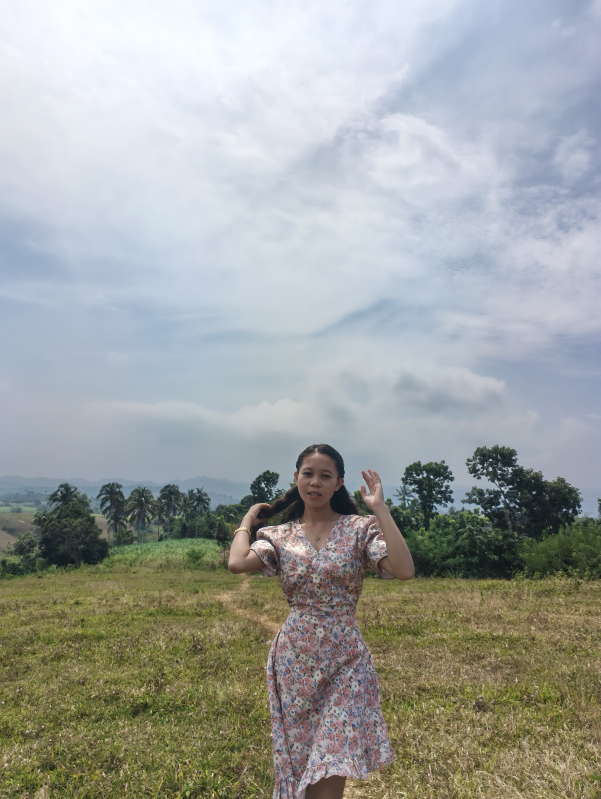
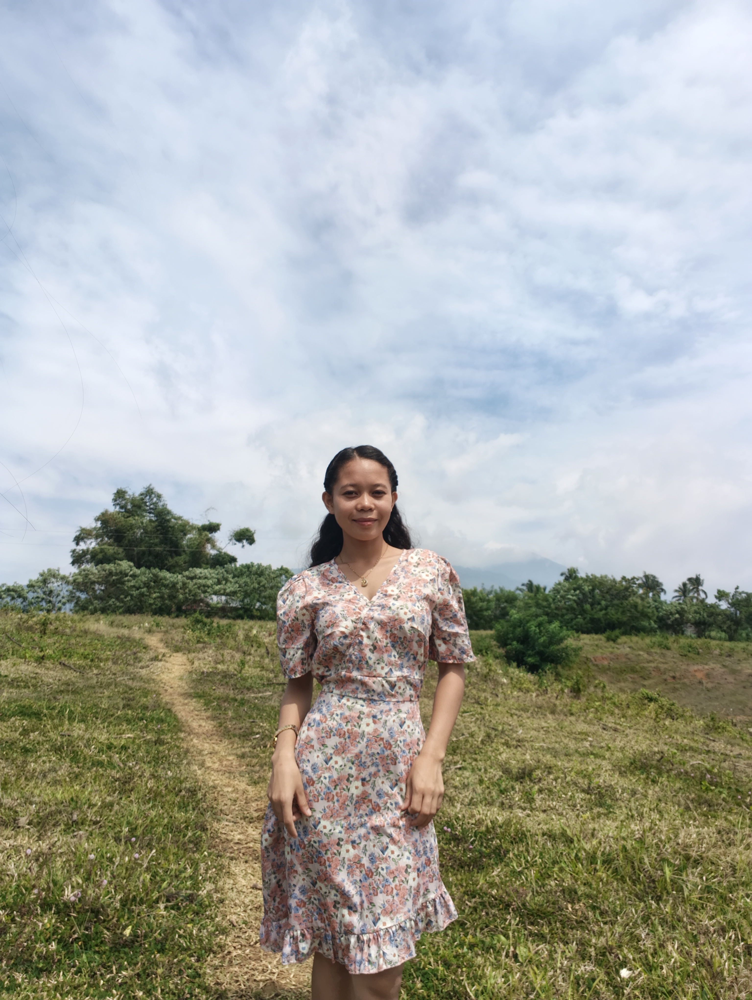
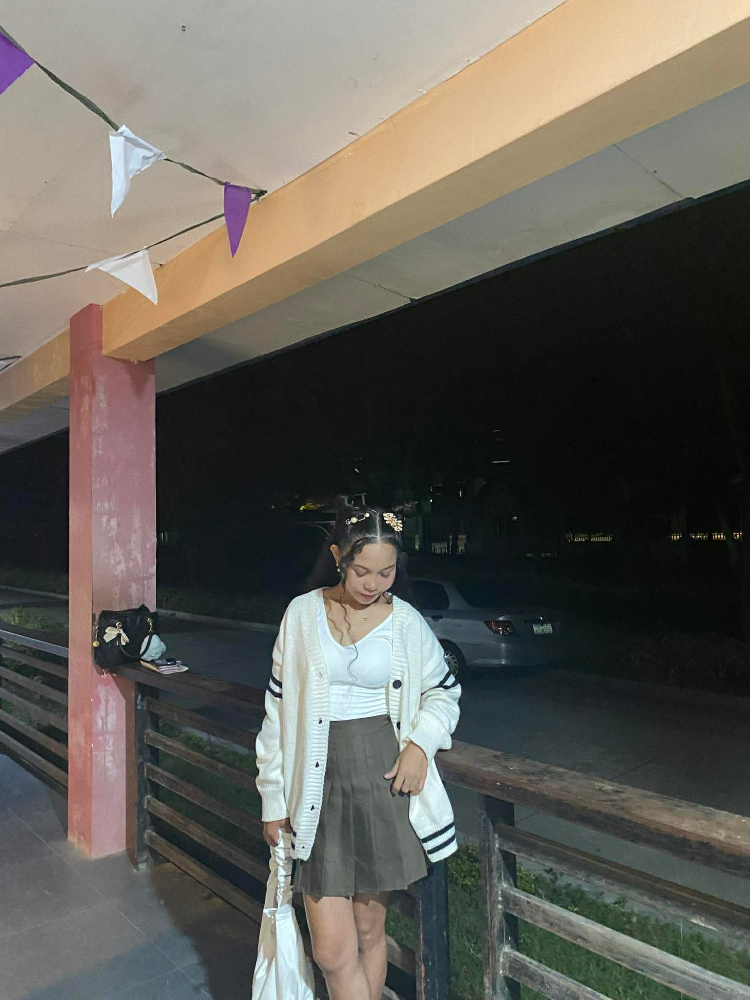
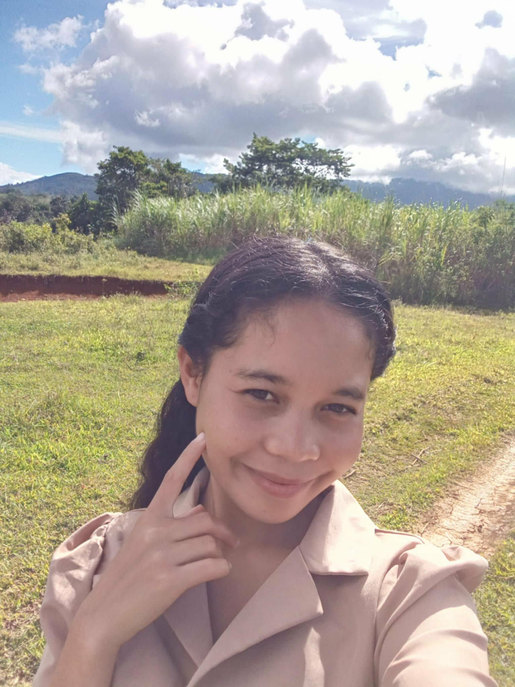
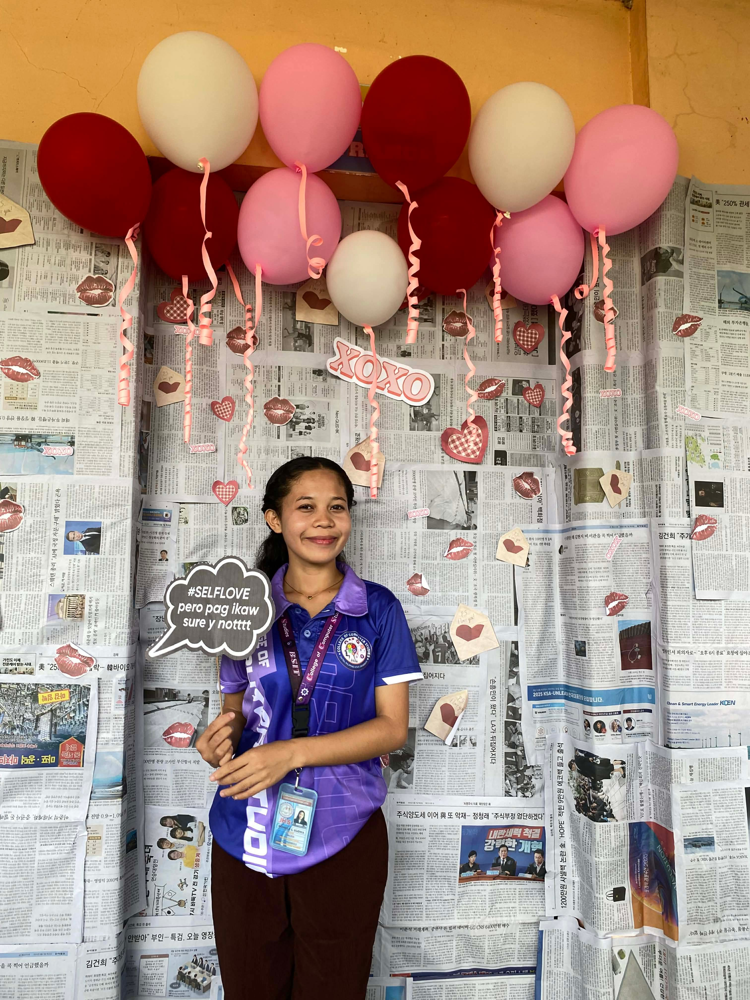
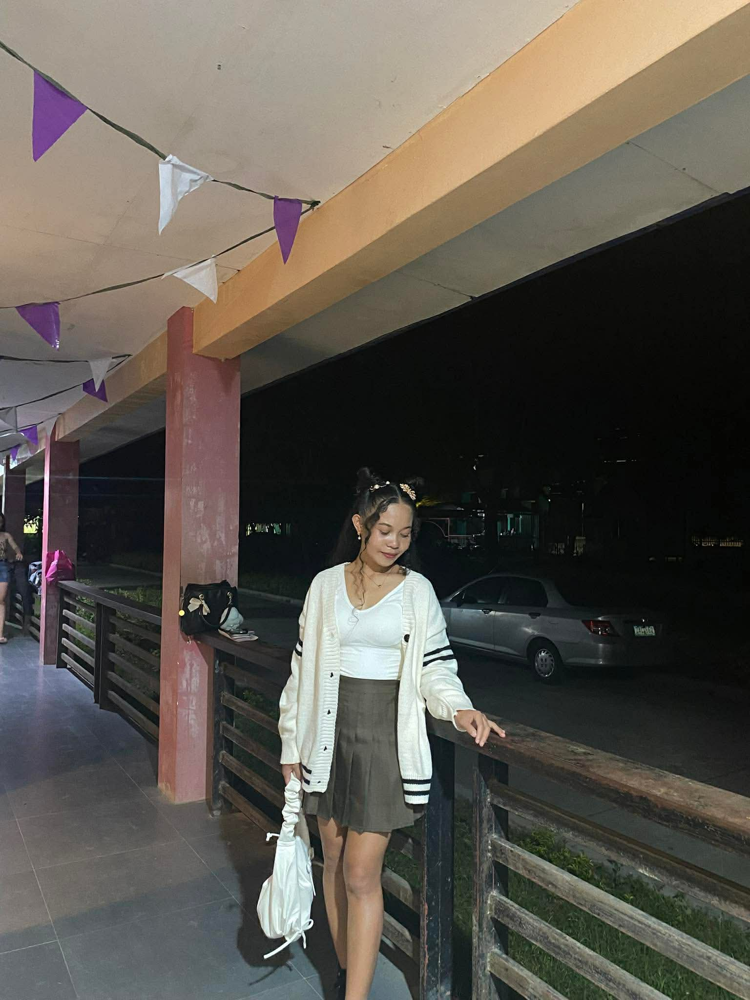
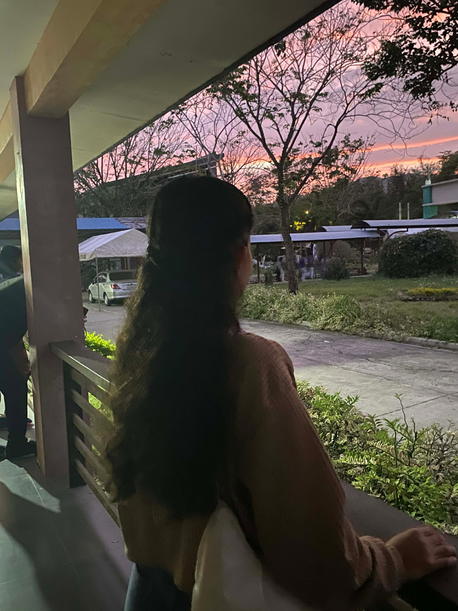
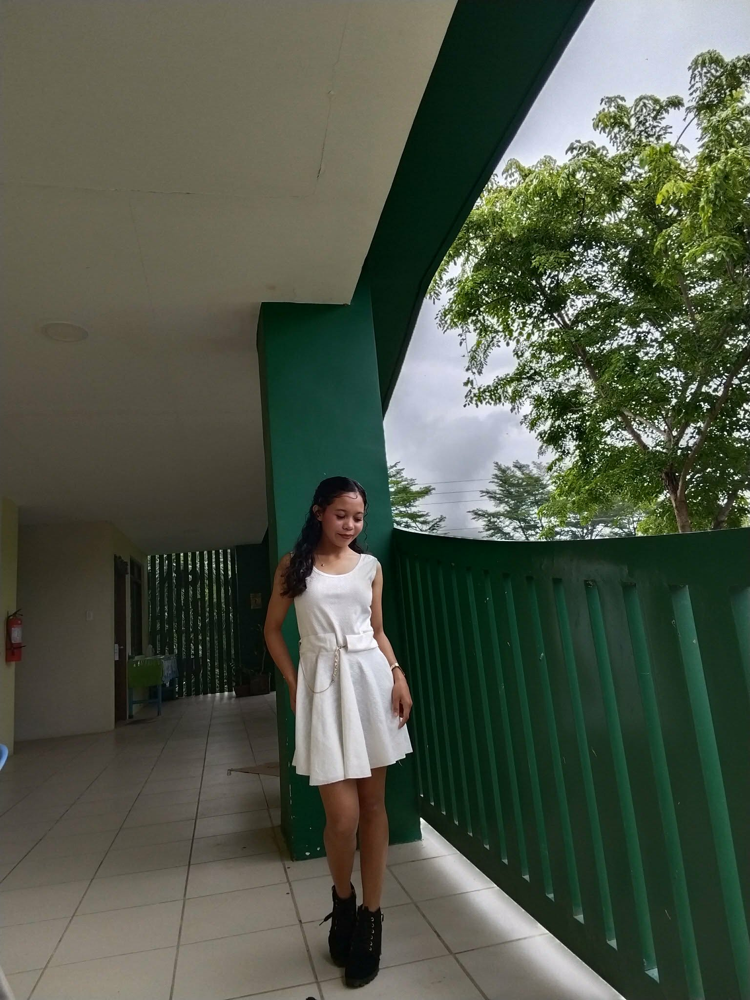

BSIT Student | Future IT Professional
Hi everyone! I’m Richelle Egonia, a second-year BSIT student of Central Philippines State University who loves discovering new things and exploring the world of technology.
Welcome to my website! Here, I’ll be sharing my journey as a college student—my knowledge, experiences, and the lessons I’m learning along the way. Feel free to explore and get to know me better!







I reflected on what I learned during our midterm topics in Integrative Programming and Technologies. I realized how much knowledge I have gained, especially about the history of programming languages. I learned that programming languages have evolved over time—from simple machine-level instructions to more advanced and user-friendly languages that developers use today. This helped me understand why programming keeps improving and becoming more powerful.
I also learned about different kinds of web technologies. These are the tools and systems that make websites work, such as browsers, servers, and frameworks. Understanding these made me see how everything connects when we use the internet.
We discussed basic programming languages, including HTML, which is used to structure web pages. I learned that HTML is like the skeleton of a website because it organizes the content such as text, images, and links. Along with this, I discovered the different fields of web development. Front-end development focuses on what users see and interact with, like design and layout. Back-end development handles the behind-the-scenes processes, such as databases and server logic. Full-stack development combines both front-end and back-end, allowing a developer to build a complete website.
One of the most exciting parts was learning how to apply CSS to HTML. CSS is used to design and style a website, such as adding colors, adjusting layouts, and making the page visually appealing. It made me realize how important design is in making a website more engaging and user-friendly.
Overall, this midterm lesson helped me understand not just the basics of programming and web development, but also how these concepts work together to create functional and attractive websites. I feel more confident and excited to continue learning and improving my skills in this field.
Email: egoniarichelle126@gmail.com
Facebook: Richelle Celestial Egonia
Phone: 09123456789
Instagram: itsyrchillri_
TikTok: Itsyrchilry